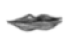

Öpüş
[Kara Kitap’tan. 1980 yılında köşe yazarı
Celâl Salik gençliğini hatırlıyor.]
Tam bir hafta önce, birisi sana selam söyledi. “Tabii ki söylerim selamını,” dedim, ama arabaya binene kadar da unutmuşum. Selamı değil, selam söyleyen adamı. Üzülüyor da değilim hani buna. Bana kalırsa, akıllı bir koca, karısına selam söyleyen bütün erkeklerin selamını unutmalıdır. Çünkü ne olur ne olmaz. Hele karınız ev kadınıysa: Çarşı pazarda gördüğü bakkalla çakkalın ve akraba çevresinin dışında, ev kadını denen talihsiz kişi zaten o bıktırıcı kocasından başka erkek de görmez hayatında. O zaman, biri ona selam söylerse düşünür o ince kişiyi, buna vakti de olur. Gerçekten de incedir ya bu kişiler. Eskiden böyle bir gelenek mi vardı allahaşkına? İnce kişiler olsa olsa kimliksiz, belirsiz bir hareme saygı yollardı o güzel eski zamanlarda. Eski tramvaylar daha iyiydi.
Evlenmediğimi, hiç evlenmediğimi, gazeteci olduğum için hiç evlenemeyeceğimi bilen okurlarım ilk cümleden başlayarak bir şaşırtmaca verdiğimi anlamışlardır. Kimdi bu seslendiğim “sen”? Hokus-pokus! Yaşlı köşe yazarınız yavaş yavaş kaybettiği hafızasından söz edecek; benimle birlikte bahçemin solan güllerini koklamaya buyurun siz de gelin, anlarsınız. Ama fazla sokulmayın, iki adım ötede durun bakalım da çok da aman aman bir şey olmayan yazı numaramızı, hilelerimiz anlaşılmadan rahat rahat yapalım.
Şöyle bir otuz yıl önce, gazeteciliğimin ilk yıllarında Beyoğlu muhabiriyken kapı kapı dolaşır, haber yakalamaya çalışırdım. Pavyonlarda, esrar tüccarları, Beyoğlu gangsterleri arasında yeni bir cinayet, intiharla biten bir aşk hikâyesi var mı diye bakar, otel otel gezer, İstanbul’a ünlü bir yabancı geldi mi, ya da ünlü bir yabancı diye okurlarıma sunabileceğim ilgi çekici bir Batılı şehrimize uğradı mı diye, ayda bir, bir iki buçukluk toka ettiğim kâtiplerden kayıt defterlerini alır okurdum. O zamanlar dünya şimdiki gibi ünlülerle dolup taşmıyordu; hiçbiri gelmezdi İstanbul’a. Kendi ülkelerinde hiç tanınmadıkları halde, gazetemde ünlü diye tanıttıklarım da, gazetedeki resimlerini gördüklerinde, sonucu hep vefasızlık olan bir şaşkınlığa kapılmışlardır. Aralarında biri, onun için gazetemde öngördüğüm şan ve şöhrete yıllar sonra gerçekten ülkesinde ulaştı da: Ünlü kadın modacısı filanca dün şehrimizdeydi, diye ben haberi geçtikten yirmi yıl sonra, gerçekten ünlü bir Fransız –ve egzistansiyalist– modacısı oldu, ama bana bir teşekkür yok: Batılı nankördü.
Vasıfsız ünlüler ve yerli gangsterlerle (şimdi bunlara Mafya deniyor) uğraştığım o günlerin birinde, ilginç bir haber olabilecek ihtiyar bir eczacıyla tanıştım. Bu adam, benim şimdi çektiğim uykusuzluk ve hafıza kaybı hastalıklarının ikisine de yakalanmıştı. Bu iki hastalığın yanyana gelmesindeki korkunç yan, biriyle (uykusuzluk sonucu fazla zaman) ötekini (hafıza eksikleri) kapatacağınızı sanırken, tam tersi olmasıdır bunun: Uykusuzluk gecelerinde, tıpkı benim gibi, anıları ihtiyardan öyle bir kaçıyormuş ki, bir türlü geçmeyen zamanın ve gecenin ortasında, kimliksiz, kişiliksiz, kokusuz, renksiz bir dünyada, o zamanlar yabancı dergilerden çeviri yazılarda sözü çok edilen “Ay’ın öteki yüzünde” yapayalnız olduğunu sanıyormuş adam.
İhtiyar, hastalığını benim gibi yazı yazarak tedavi edeceğine, eczanenin laboratuvarında bir ilaç icat etmişti. Benimle birlikte, bir de bir akşam gazetesinden esrarkeş bir muhabirin katıldığı iki kişilik (eczacıyla birlikte üç ediyorduk) basın toplantısında, kamuoyuna tanıttığı pembe renkli sıvısını şişesinden bir bardağa gösterişle doldurup doldurup içtikten sonra, gerçekten yıllardır aradığı uykusuna kavuşmuştu da. Uykusu kadar hafızasının cennet anılarına da kavuştu mu, ihtiyar eczacı hiç uyanmadığı için, bir Türk en sonunda bir şey icat etti heyecanına kapılan kamuoyu bunu hiç öğrenemedi.
Karanlık bir gün, sanırım iki gün sonra, gittiğimiz cenazesinde, hatırlamak istediği şeyin ne olduğunu düşünmüştüm hep. Hâlâ da düşünürüm: Hafızamızın, biz yaşlandıkça fazla yük taşımak istemeyen huysuz bir yük hayvanı gibi attığı ağırlıklar en sevmediği yükler midir, en ağırları mı, yoksa en kolay düşenler mi?
İstanbul’un en güzel köşelerindeki küçük odalarda tül perdeler arasından süzülen güneş ışığının gövdelerimize nasıl vurduğunu ben unuttum. Gişedeki soluk Rum kızına âşık olarak deliren bilet karaborsacısının, hangi sinemanın kapısında çalıştığını unuttum. Gazeteniz için rüyalarınızı yorumlarken, benimle aynı rüyaları gören sevgili okuyucularımın adlarını ve onlara mektupla yolladığım esrarı çoktan unuttum.
Yıllar sonra, köşe yazarımız, o kayıp zamana yeniden bakarken, geceyarısı uykusuzluk içinde tutunacak bir dal ararken, aklına İstanbul sokaklarında geçirdiği korkunç bir gün geliyor: Bir keresinde bütün gövdemi, bütün ruhumu sonuna kadar kaplayan bir öpüşme isteğine kapılmıştım.
Eski sinemaların birinde, bir cumartesi öğleden sonra, belki sinemadan da eski bir Amerikan dedektif filmini (Kızıl Fener) seyrederken pek de uzun olmayan bir öpüşme sahnesi görmüştüm. Siyah beyaz filmlerdeki öteki öpüşme sahnelerinden farkı olmayan ve bizim sansürcüler tarafından dört saniyeden fazlası kesilmiş sıradan bir öpüşme sahnesiydi, ama nasıl oldu bilmiyorum, bir kadınla aynı şekilde, dudaklarımı onun dudaklarına bastırarak, evet, bütün gücümle bastırarak öpüşme isteği öyle bir şekilde yükseldi ki içimde, mutsuzluktan tıkanacak gibi oldum. Yirmi dört yaşındaydım, ama daha kimseyle dudaktan öpüşmemiştim. Hayır, kerhanelerde kadınlarla yatmamış değildim hiç, ama o kadınlar hiç öpüşmedikleri gibi, ben de istemezdim onların dudaklarını öpmeyi.
Caddeye çıktığımda film bitmemişti; şehrin bir yerinde bir yerde, benimle öpüşmek isteyen bir kadın beni bekliyormuş gibi bir sabırsızlık ve telaş vardı üzerimde. Tünel’e kadar koşturur gibi yürüdüğümü, sonra gerisin geri hızla Galatasaray’a döndüğümü ve umutsuzca, karanlıkta bir şey aranır gibi, bir yüzün anısını, bir gülümseyişi, bir kadın hayalini çıkarmaya çalıştığımı hatırlıyorum. Öpüşebileceğim hiçbir tanıdık, hiçbir akraba yoktu; bir sevgili bulabilme umudu hiç yoktu; sevgilim olabilecek bir kimseyi tanımıyordum ki hiç! Sanki kalabalık şehir bomboş gibiydi.
Ama gene de, Taksim’e gelir gelmez, bir otobüse binmiş buldum kendimi. Ana tarafımdan uzak bir akraba ailesi, babam bizi terk ettiği yıllarda bize ilgi göstermişti; benden iki yaş küçük ve o zamanlar birkaç kere dokuz taş oynadığım bir kızları vardı. Bir saat sonra, tâ Fındıkzade’deki evlerine varıp kapılarını çaldığımda, öpmeyi hayal ettiğim kızın çoktan evlendiğini hatırladım. Bugün ikisi de rahmetli olan anneyle baba beni içeri buyur ettiler. Biraz şaşırmışlar, yıllar sonra neden geldiğimi anlayamamışlardı. Şundan bundan konuşarak (gazeteci olmam bile ilgilerini çekmiyordu: Dedikoduculuk gibi aşağılık bir meslekti bu onlar için), radyodaki futbol maçını dinleyerek çay içtik, simit yedik. Akşam yemeğine de kalmamı bekliyorlardı iyi niyetle, ama birden bir şeyler mırıldanarak kendimi dışarı attım.
Dışarı çıktığımda, soğuk havayı hissettiğimde, öpüşme isteği bütün şiddetiyle içimde alev alev yanıyordu hâlâ: Sanki tenim buz gibi, ama etim ve kanım alevler içinde olduğu için, derin, dayanılmaz bir huzursuzluk duyuyordum. Eminönü’nden vapura binip Kadıköy’e geçtim. Mahallesindeki öpüşken bir kızın (yani evlenmeden önce öpüşen bir kızın) maceralarını anlatan bir lise arkadaşım vardı. Fenerbahçe’ye onun evine yürürken, o kız olmasa bile, arkadaşım onun gibi başkalarını bilir, diye düşünüyordum. Arkadaşımın bir zamanlar oturduğu yerde, karanlık ahşap konaklar ve servi ağaçlarının çevresinde dört döndüm, ama evini bulamadım. Bugün çoktan hepsi yıkılmış o ahşap yapılar arasında yürürken bazı aydınlık pencerelere bakıyor ve evlenmeden önce öpüşen kızın orada oturduğunu hayal ediyordum. “İşte, benimle öpüşecek kız orada!” diye düşünüyordum bir pencereye bakarak. Aramızda çok bir uzaklık yoktu, bir bahçe duvarı, kapı, ahşap merdivenler, ama ulaşamıyordum ona; öpüşemiyordum; herkesin bildiği o esrarlı, tuhaf, inanılmaz ve rüya kadar yabancı ve sihirli şey, o korkutucu ve çekici şey o an ne kadar yakın ve ne kadar da uzaktı!
Yeniden Avrupa yakasına dönerken, vapurda gördüğüm kadınlardan birini zorla ya da bir an bir yanlışlık olmuş gibi yaparak öpsem ne olur diye düşündüğümü hatırlıyorum, ama ince eleyip sık dokuyacak gibi olmadığım halde, çevremde öyle bir yüz göremiyordum. Hayatımın başka dönemlerinde de İstanbul kalabalıkları içersinde soluk alıp verirken umutsuzluk ve acıyla şehrin boş, bomboş olduğu duygusuna kapıldığım zamanlar olmuştur, ama hiçbir zaman bu duyguyu o günkü gibi şiddetle hissetmemiştim.
Üzeri nemle kaplı kaldırımlarda uzun uzun yürüdüm. Bu boş, bomboş şehre istediğimi elde etmek için, başka bir zaman, şan ve şöhretle gelecektim elbette. O anda ise, köşe yazarınızın, annesiyle oturduğu evine gidip, zavallı Rastignac’ı Türkçe çevirisinden anlatan Balzac’tan başka hiçbir tesellisi yoktu. Ama kitapları, o zamanlar, kendi keyfim için değil, tam bir Türk gibi, ilerde bana yararı olacak şeyler diye görev duygusuyla okurdum. İlerde yararı olacak şey ise şimdiyi hiç mi hiç kurtarmaz! Böylece, odama kapandıktan az sonra, sabırsızlık içinde dışarı çıktım. Banyonun aynasına baktığımı, insanın hiç olmazsa kendisini öpebileceğini düşündüğümü, aynaya bakarken filmdeki oyuncuları gözümün önüne getirdiğimi hatırlıyorum.
Zaten o oyuncuların dudakları hiç gitmiyorlardı gözümün önünden (Joan Bennett, Dan Duryea). Ama kendimi bile değil, en fazla aynayı öpecektim; dışarı çıktım. Annem masaya oturmuş, kim bilir hangi uzak akrabanın zengin akrabasından aldığı patronlar ve şifon kumaş kesikleri arasında, bir düğün için gece elbisesi yetiştiriyordu.
Ona bir şeyler anlatmaya başladım. İlerde yapacağım şeyleri, başarılarımı, hayallerimi çağrıştıran hikâyeler ve hayaller olmalıydı bunlar, ama annem kendini vererek beni dinlemiyordu. Anladım ki, ne anlatırsam anlatayım, önemli değildi; önemli olan bir cumartesi akşamı evde annemle oturup yârenlik etmemdi. Bir öfke duymaya başladım. Saçları o akşam nedense bakımlı ve taralıydı, dudaklarına belli belirsiz bir boya sürmüştü; kiremit kırmızısı rengini hâlâ hatırladığım bir dudak boyası. Annemin dudaklarına, sık sık benimkine benzetilen ağzına bakarken kalakalmışım.
“Tuhaf tuhaf ne bakıyorsun öyle bana?” dedi korkuyla.
Uzun bir sessizlik oldu. Anneme doğru yürüdüm, ama iki adım sonra da durdum; bacaklarım titriyordu. Daha fazla yaklaşmadan, bütün gücümle bağırmaya başlamışım. Ne söylediğimi açık seçik hatırlayamıyorum şimdi; ama hemen, aramızda sık sık çıkan o korkunç kavgalardan biri başlamıştı. Komşular bizi dinliyor korkusu bir anda ikimizin de yüreğinden çıkmıştı. İnsanın karşısındakine her şeyi söyleyiverdiği o öfke ve özgürlük anlarından biriydi: Böyle durumlarda bir fincan kırılır ya da soba devriliverecekmiş gibi olur.
Zorlukla kendimi evden dışarı attığımda, şifon kumaşların, makaraların ve ithal toplu iğnelerin (ilk Türk toplu iğnesi 1976’da Atlı firmasınca üretilmiştir) arasında annem ağlıyordu. Geceyarısına kadar şehrin sokaklarında dolaştım durdum. Süleymaniye Camii’nin avlusuna girdim, Atatürk Köprüsü’nden geçtim, Beyoğlu’na çıktım. Sanki ben, ben değildim; sanki bir çeşit öfke ve intikam ruhu beni izliyordu; sanki olmam gereken kişi peşimdeydi.
Beyoğlu’nda bir muhallebiciye oturmuştum; sırf kalabalık içersinde olmak için; ama cumartesi akşamının o sonsuzluk saatini doldurmaya çalışan benim gibi biriyle göz göze gelirim diye kimseye de bakmıyordum: Benim gibi olanlar, birbirlerini hemen tanır ve küçümserler çünkü. Az sonra, bir karı-koca bana yaklaştılar. Adam bir şeyler anlatmaya başladı. Anılarımın arasındaki bu beyaz saçlı hayalet kimdi?
Evini Fenerbahçe’de bir türlü bulamadığım eski arkadaşmış. Evlenmiş, Devlet Demir Yolları’nda çalışıyormuş, saçları şimdiden beyazlamış, o yılları da çok iyi hatırlıyormuş. Yıllar sonra rastladığınız eski bir arkadaşınız, yanındaki karısı ya da ahbabına, kendi geçmişini ilginç gösterebilmek için, sizi çok ilginç buluyormuş, ortak ne anılarınız, ne sırlarınız varmış gibi yaparak sizi şaşırtır ya, o da öyle yaptı bana, ama ben şaşırmadım. Yalnızca hayali anıları daha da ilginç kılan o role, benim onun geçmişte bıraktığı sefil ve acıklı hayata hâlâ devam ettiğim oyununa girmedim.
Şekersiz su muhallebimi kaşıklarken, çoktan evlendiğimi, çok iyi para kazandığımı, senin beni evde beklediğini, Chevrolet arabamı Taksim’e bırakıp, senin nazın üzerine buraya sana tavukgöğsü almaya geldiğimi, Nişantaşı’nda oturduğumuzu, onları arabamla yolum üzerinde bir yere bırakabileceğimi itiraf ettim: Teşekkür etti, hâlâ Fenerbahçe’de oturuyormuş çünkü. Meraklı olduğu için önce çekine çekine, sonra, senin “iyi bir aileden” olduğunu öğrenince de, iyi ailelere olan yakınlığını karısına kanıtlamak için soruşturdu: Fırsatı kaçırmadım ve seni hatırlaması gerektiğini söyledim. Memnuniyetle hatırladı. Sana derin saygılarını yolladı. Elimde tavukgöğsü paketi muhallebiciden çıkarken önce onu, sonra filmlerden öğrenilmiş kibar Batılı havasıyla karısını da öptüm. Ne tuhaf okurlarsınız siz, ne tuhaf ülke burası.